Tableau des régions touristiques
Voici un aperçu de nos services par région.
| Image | Région | Ville | Service |
|---|---|---|---|
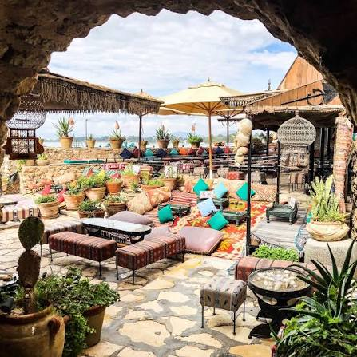 |
Nord | Hammamet | Café mer |
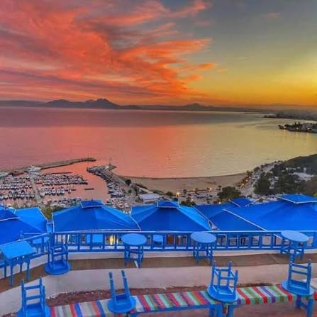 |
Sidi Bou Saïd | ||
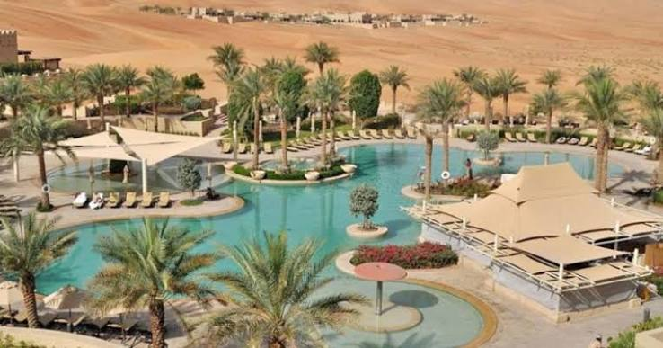 |
Sud | Excursion dans le désert de Tozeur | |
Programme de voyage à Hammamet
Voici un aperçu de nos programmes.
| Image | Destination | Description |
|---|---|---|
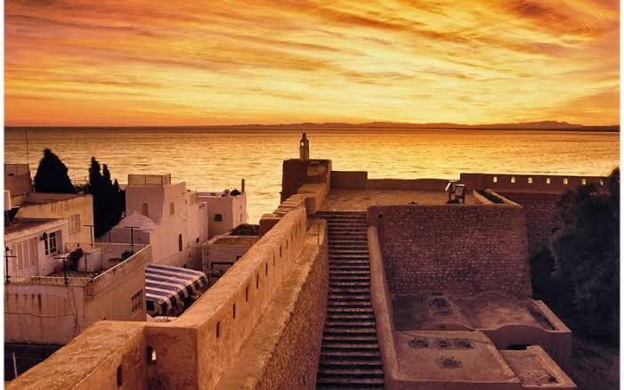 |
La Kasbah | Une ancienne forteresse avec une belle vue sur la mer |
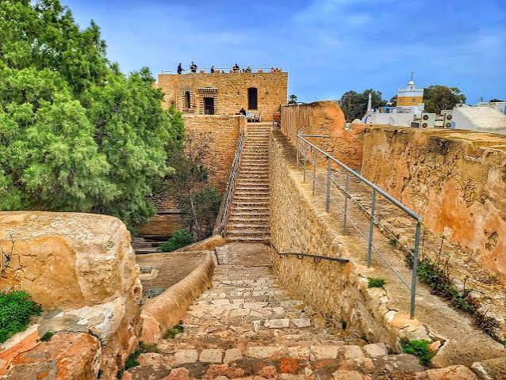 |
La Médina | Un quartier historique avec des ruelles et des maisons traditionnelles |
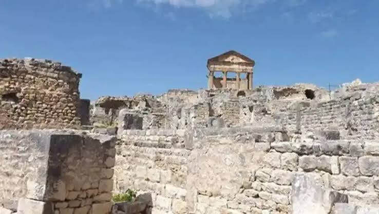 |
Pupput | Un ancien site romain connu pour ses ruines et ses mosaïques |
Programme de voyage à Sidi Bou Saïd
Voici un aperçu de nos programmes.
| Image | Destination | Description |
|---|---|---|
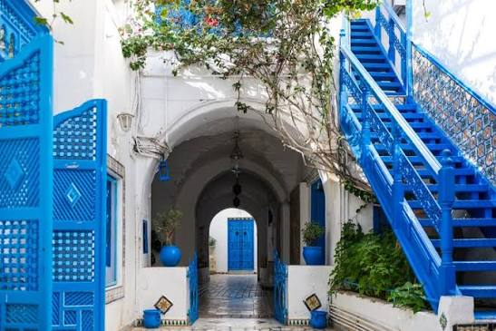 |
Dar El Annabi | Une maison traditionnelle qui présente la vie tunisienne ancienne |
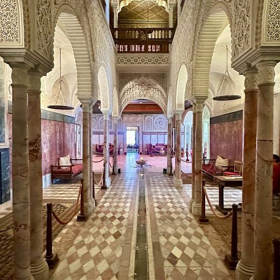 |
Ennejma Ezzahra | Un magnifique palais connu pour son architecture arabe et ses jardins |
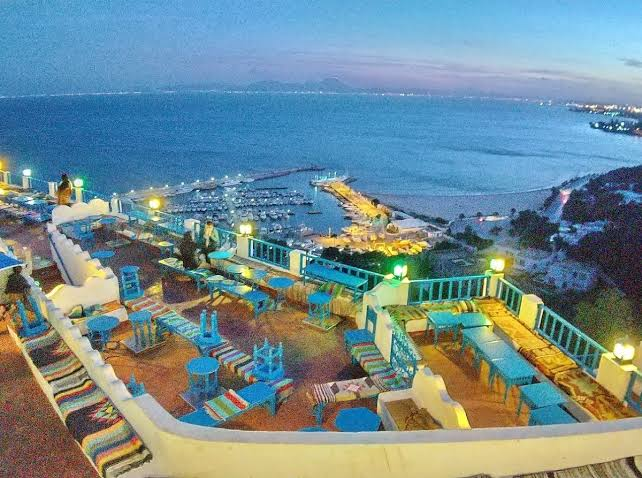 |
Café des Délices | Un café célèbre avec une belle vue sur la mer |
Programme de voyage à Tozeur
Voici un aperçu de nos programmes.
| Image | Destination | Description |
|---|---|---|
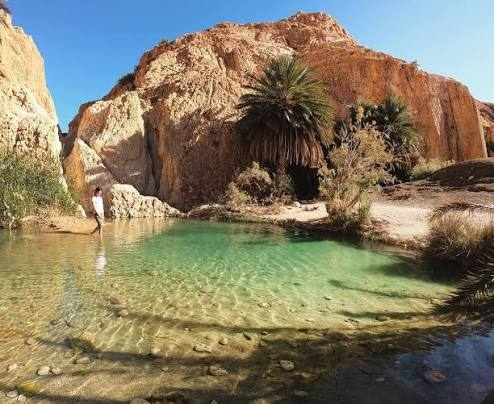 |
Oasis de Tozeur | Une belle oasis connue pour ses palmiers et ses dattes |
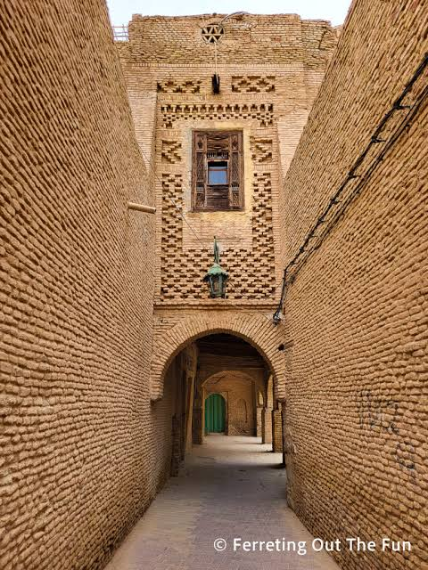 |
Médina de Tozeur | Une vieille ville célèbre pour son architecture traditionnelle en briques |
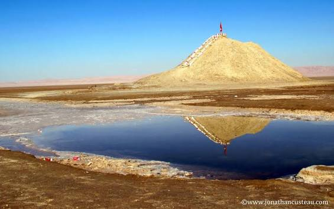 |
Chott el-Jerid | Un grand lac salé connu pour ses paysages magnifiques |